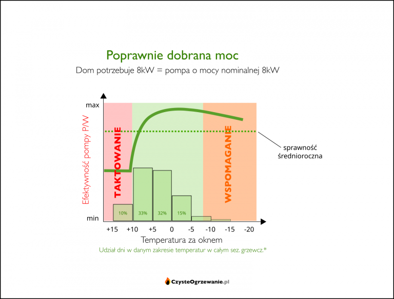

Jaką pompę ciepła wybrać ?
Jaką moc dobrać ?
Wszystkiego dowiesz się w poniższym artykule, który przygotowaliśmy, a jeśli nie uzyskasz tu odpowiedzi to zawsze czekamy na kontakt od Ciebie!
Dobór mocy pompy ciepła do ogrzewania
Nie cena, kolor czy marka, lecz właściwy dobór mocy pompy ciepła jest kluczowy dla zadowolenia z jej posiadania. Możesz kupić powietrzną pompę ciepła z najwyższej półki, ale jeśli jej moc będzie zbyt duża w stosunku do potrzeb budynku (z inżynierska "przewymiarowana", to po pierwszej zimie i rachunku z elektrowni rzucisz nią za psami a następne kilka lat będziesz opowiadać znajomym, jakim to humbugiem są pompy ciepła.
Powietrzne pompy ciepła zdobywają rynek – słusznie, bo są coraz tańsze i lepsze, a i grzać mogą tanio. Niestety już widać, że i do tej branży
przenosi się rak przewymiarowania – włazi tutaj razem z zainfekowanymi fachofcami, którzy po latach
montowania ludziom przewymiarowanych kotłów węglowych, teraz chcą montować ludziom tak samo przewymiarowane pompy ciepła. Na Odyna, niechaj
się w porę opamiętają i douczą. A jeśli nie są do tego zdolni, to chociaż ty, kliencie, zobacz czym grozi przewymiarowanie powietrznej pompy
ciepła i jeśli spostrzeżesz, że ktoś chce cię tak zrobić na szaro – omijaj partacza szerokim łukiem jeśli szanujesz swoje pieniądze i nerwy.
Może głód przekona takich delikwentów do dokształcenia się lub zmiany branży.
Jakiej mocy grzewczej potrzebuje budynek
Pierwszy krok żeby w ogóle myśleć o doborze mocy powietrznej pompy ciepła to oszacowanie zapotrzebowania budynku na moc grzewczą.
Rozsądne opcje to:
- zlecenie profesjonalnego audytu OZC (koszt: kilkaset złotych)
- przybliżone obliczenia na cieplowlasciwie.pl
Najlepsza (najdokładniejsza) jest opcja nr 1. Niestety jest też skomplikowana, wymaga wiedzy, dlatego trochę kosztuje. Opcja nr 2 jest mniej
dokładna, ale wciąż pomocna w oszacowaniu potrzebnej mocy pompy ciepła z sensowną dokładnością. Korzysta z niej wiele firm montujących pompy
ciepła.
może dlatego, że jest darmowa 😉
Jeśli dany fachman nie odeśle cię do w/w serwisu ani sam nie wykona choćby przybliżonych obliczeń a od razu ma gotową odpowiedź typu: na 100mkw. to panie będzie 10kW minimum – bierz nogi za pas, bo to znak, że dobiera moc od czapy, czyli z ogromnym zapasem.
Jak dobrać moc pompy ciepła do potrzeb budynku
Kiedy już znasz potrzebną moc grzewczą – dalej jest z górki:
Budynek potrzebuje 8kW mocy grzewczej – wybierasz pompę ciepła o mocy nominalnej max. 8kW.
Dlaczego "max."? Bo każdy kilowat więcej to kopniak w średnioroczną sprawność.
Mniejszym problemem będzie w tym przypadku pompa o mocy 6-7kW niż 9-10kW. Nieco za mała pompa wcześniej będzie potrzebowała wspomagania
dodatkowym źródłem ciepła – niewiele jest dni w zimie, które tego wymagają. Za to dobrze sobie poradzi w dni cieplejsze, które w sezonie
grzewczym przeważają. Natomiast pompa zbyt duża będzie miała gorszą sprawność w dni cieplejsze.
Dlaczego przewymiarowanie powietrznej pompy ciepła jest tak wielkim problemem
Jak każdy kocioł, również pompa ciepła ma swoją moc nominalną i zakres modulacji mocy. Wygląda to niby trochę inaczej niż w kotle np. węglowym – ale tak naprawdę problemy są bardzo podobne.

Co tu jest najistotniejsze? Ten gwałtowny spadek sprawności około/poniżej mocy minimalnej.
Gdy pompa nie jest w stanie pracować ciągle, bo budynek potrzebuje mniej ciepła niż pompa produkuje na najniższym swoim biegu, wtedy zaczyna się taktowanie, czyli praca z częstymi załączeniami i zatrzymaniami. Tak samo zachowują się kotły gazowe i węglowe. One również mają w tym zakresie pracy najgorsze sprawności.
W pompie ciepła nie dość, że sprawność przy częstym taktowaniu jest fatalna, to jeszcze odbija się na żywotności urządzenia, gdyż rozruch jest momentem największego zużycia sprężarki. To jak jazda autem spalinowym na krótkie dystanse.
Teraz na powyższe nałóżmy rozkład temperatur w sezonie grzewczym. Tak to będzie wyglądało dla poprawnie dobranej mocą pompy ciepła:
Wszystko do siebie zaskakująco pasuje: najwięcej dni sezonu grzewczego wypada w zakresie obciążeń, w którym pompa ciepła ma najlepszą sprawność. Przypadek? Gdzie tam! Tak to zostało zaprojektowane.
A teraz zobaczmy, jaki los sobie gotuje ktoś pełen dobrych intencji, chcący przewymiarować pompę ciepła, aby nie pokąsały go te straszne grzałki. Załóżmy, że wziął pompę o 50% za dużą:

Cel osiągnięty: dodatkowe źródło ciepła nigdy nie będzie potrzebne. Tylko co z tego, skoro mimo to rachunek za prąd będzie bolesny! Ale jako to? Ano tak: przewymiarowanie pompy w celu "ucieczki przed grzałkami" spowodowało, że pompa większej mocy przez większość sezonu grzewczego będzie musiała taktować. Potrzeby budynku będą bowiem zbyt małe, aby mogła pracować ciągle choćby na minimum mocy. W ciągłą pracę wejdzie dopiero w mrozy – ale to mniejsza część sezonu grzewczego. Skutkiem tego średnioroczna sprawność poleci na twarz w porównaniu do sytuacji gdzie moc pompy ciepła dobrano poprawnie.
Wszystko w skrócie na jednej grafice: